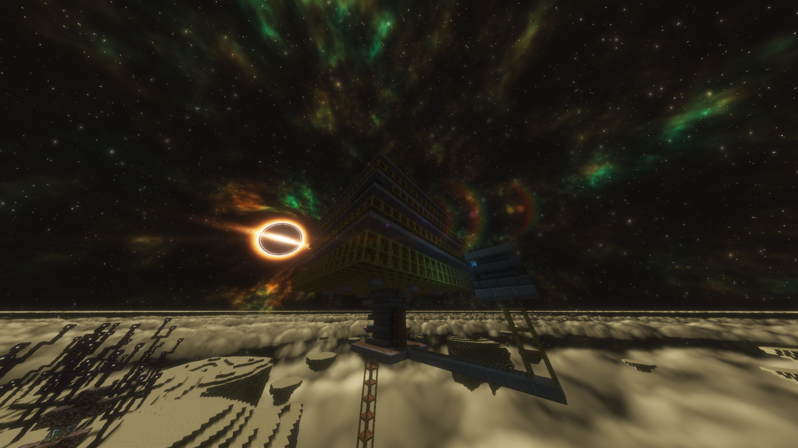

📦 Shulker Farm
Otomatik Shulker Shell üretim sistemi

📦
Dosya Türü
.litematic
⚙️
Farm Türü
Shulker
🎮
Mod
Litematica
🐚
Ürün
Shulker Shell
📖 Schematic Hakkında
Bu schematic otomatik Shulker Shell üretmek için kullanılabilir. Litematica ile Minecraft dünyanıza kolayca yerleştirebilirsiniz.